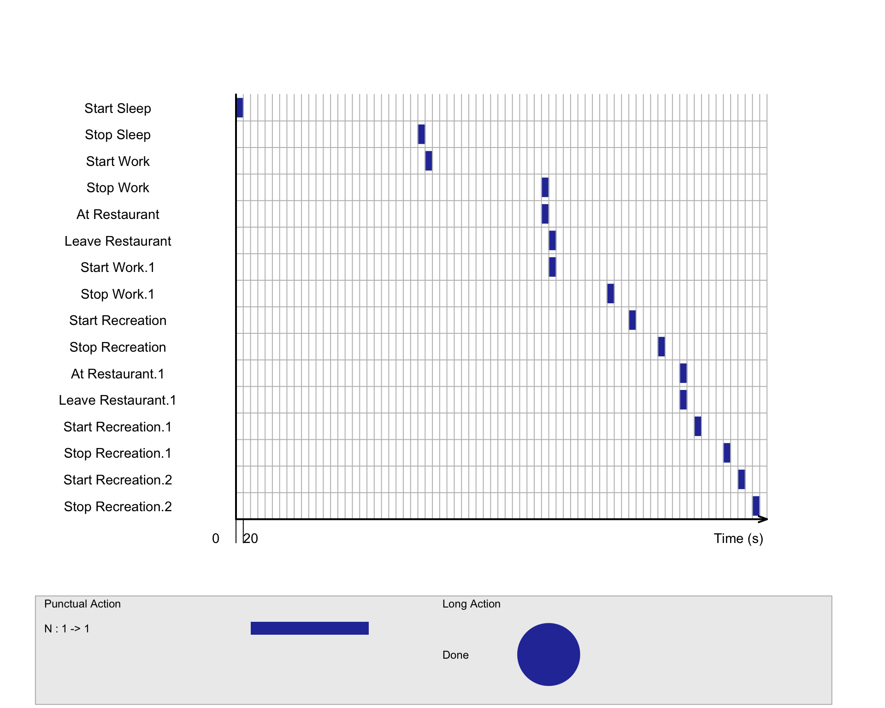

1. Overview
1.1 Introduction
With reference to Challenge 2 Question 3 of VAST Challenge 2022,
this take-home exercise will reveal the daily routines of
two selected participants of the city of Engagement,
Ohio USA. ViSiElSe and
other appropriate visual analytics R packages will be used.
Challenge 2: Patterns of Life, Question 3
Participants have given permission to have their daily routines captured. Choose two different participants with different routines and describe their daily patterns, with supporting evidence.
1.2 Methodology
As VAST challenge datasets include participants’ daily routine logs spanning for 15 months, given the time limit (1 week) of this take-home exercise, the scope of this take-home exercise is scaled down to focus on specific areas of participant’s daily life routine:
- The two participants are selected by choosing one participant from low education level and another from graduate education level. This take-home exercise is interested to find out how their daily life routines differ.
- This take-home exercise will look at their daily life routines based on the first day of the study, Mar 1 2022, a weekday, to examine the difference.
- The status log data will be cleaned to fit ViSiElSe format and life routines will be plotted accordingly.
2. Data Preparation
2.1 Install and Load Packages
The following code chunk installs the required R packages and loads them onto RStudio environment.
show
packages = c('scales', 'viridis', 'lubridate', 'ggthemes',
'gridExtra', 'tidyverse', 'readxl', 'knitr',
'data.table', 'ViSiElse', 'patchwork')
for (p in packages){
if(!require(p, character.only = T)){
install.packages(p)
}
library(p,character.only = T)
}
2.2 Import Raw Datasets
Relevant datasets are imported using read_csv() of readr
package, which is useful for reading delimited files into tibbles.
show
participants <- read_csv('data/Participants.csv')
show
logs1 <- read_csv('rawdata/ParticipantStatusLogs1.csv')
2.3 Data Wrangling
Locate Target Participants
The following code chunk is used to extract participants with educations levels of low and graduate to locate our target participants.
# A tibble: 5 × 7
participantId householdSize haveKids age educationLevel
<dbl> <dbl> <lgl> <dbl> <chr>
1 21 3 TRUE 35 Low
2 23 3 TRUE 57 Low
3 29 3 TRUE 18 Low
4 34 3 TRUE 23 Low
5 35 3 TRUE 20 Low
# … with 2 more variables: interestGroup <chr>, joviality <dbl># A tibble: 5 × 7
participantId householdSize haveKids age educationLevel
<dbl> <dbl> <lgl> <dbl> <chr>
1 14 3 TRUE 38 Graduate
2 18 3 TRUE 20 Graduate
3 31 3 TRUE 40 Graduate
4 36 3 TRUE 41 Graduate
5 45 3 TRUE 50 Graduate
# … with 2 more variables: interestGroup <chr>, joviality <dbl>Given the two data table of different educational levels, the following two participants are chosen:
- Participant Id 21: household size 3, have kids, age 35, low education level, interest group E and joviality index of 0.931.
- Participant Id 14: household size 3, have kids, age 38, graduate education level, interest group H and joviality index of 0.930.
This exercise is interested to find out how these two participants’ daily routine varies due to different education levels, as they have otherwise very similar demographic.
Extract Relevant Subsets
The following code chunk extracts participant id 21 & 14’s daily life routine on Mar 1, 2022.
show
# participant id 21:
logs_21 <- logs1 %>%
mutate(date = date(timestamp),
time = (hour(timestamp)*60+minute(timestamp))) %>%
filter(participantId== 21,
date == '2022-03-01') %>%
select(participantId, date, time, currentMode:sleepStatus, timestamp)
# participant id 14:
logs_14 <- logs1 %>%
mutate(date = date(timestamp),
time = (hour(timestamp)*60+minute(timestamp))) %>%
filter(participantId== 14,
date == '2022-03-01') %>%
select(participantId, date, time, currentMode:sleepStatus, timestamp)
The following code chunk saves the two logs into RDS format and read as RDS to avoid uploading large files onto GitHub.
Overview of Data
The following code chunk allows us to have an overview of the two status logs.
show
head(logs_21, 10)
# A tibble: 10 × 7
participantId date time currentMode hungerStatus sleepStatus
<dbl> <date> <dbl> <chr> <chr> <chr>
1 21 2022-03-01 0 AtHome JustAte Awake
2 21 2022-03-01 5 AtHome JustAte Awake
3 21 2022-03-01 10 AtHome JustAte Awake
4 21 2022-03-01 15 AtHome JustAte Awake
5 21 2022-03-01 20 AtHome JustAte Awake
6 21 2022-03-01 25 AtHome JustAte Awake
7 21 2022-03-01 30 AtHome JustAte Sleeping
8 21 2022-03-01 35 AtHome JustAte Sleeping
9 21 2022-03-01 40 AtHome JustAte Sleeping
10 21 2022-03-01 45 AtHome JustAte Sleeping
# … with 1 more variable: timestamp <dttm>show
head(logs_14, 10)
# A tibble: 10 × 7
participantId date time currentMode hungerStatus sleepStatus
<dbl> <date> <dbl> <chr> <chr> <chr>
1 14 2022-03-01 0 AtHome JustAte Awake
2 14 2022-03-01 5 AtHome JustAte Awake
3 14 2022-03-01 10 AtHome JustAte Sleeping
4 14 2022-03-01 15 AtHome JustAte Sleeping
5 14 2022-03-01 20 AtHome JustAte Sleeping
6 14 2022-03-01 25 AtHome JustAte Sleeping
7 14 2022-03-01 30 AtHome JustAte Sleeping
8 14 2022-03-01 35 AtHome JustAte Sleeping
9 14 2022-03-01 40 AtHome JustAte Sleeping
10 14 2022-03-01 45 AtHome BecameFull Sleeping
# … with 1 more variable: timestamp <dttm>From the overview we can tell that some of the values are not reliable as both participants are just ate while they are sleeping.
The following code chunk aims to examine the various activities
recorded in the status log using unique().
show
unique(logs_21$currentMode)
[1] "AtHome" "Transport" "AtWork" "AtRestaurant"
[5] "AtRecreation"show
unique(logs_21$hungerStatus)
[1] "JustAte" "BecameFull" "BecomingHungry"
[4] "Hungry" show
unique(logs_21$sleepStatus)
[1] "Awake" "Sleeping"The following meaningful activities will be tracked based on the status log:
- Start work, end work, at restaurant, leave restaurant, start recreation, end recreation from current mode;
- Start sleep, stop sleep from sleep status;
Hunger status column is not used for several reasons here. Firstly, the labels indicate participant’s hunger feelings instead of what they did at the time, therefore, it is challenging to determine their meal times based on this column. For example, both just ate and became full could be interpreted as during meal or just finished meal. Secondly, the values in this column are unreliable as it is found that both participants recorded just ate during their sleep. Therefore, this take-home exercise did not use hunger status to reflect participant’s daily life routine.
Deriving Activity Labels
The following code chunk is used to label the activity status with
numbers and focus on the activities we intend to track.
cumsum() is used to label only the tracked activities by
giving them the same number label, while the other activities are labels
as the accumulative sum. For example, to track sleeping, all
other status in sleep mode are given incremental numbers while
it stays the same for sleeping. The same is applied for all the
tracked activities.
show
# mark number labels for each activity
# if there is no change in status: number label increase by 1
# if there is change in status: number label stays the same
logs_21num <- logs_21 %>%
mutate(work= cumsum(currentMode != 'AtWork'),
restaurant= cumsum(currentMode != 'AtRestaurant'),
recreation= cumsum(currentMode != 'AtRecreation'),
sleep = cumsum(sleepStatus != 'Sleeping'))
The following code chunk is used to match number labels to start … and stop … labels, for the first and last record of the tracked activities. For example, when the sleep status changed from awake to sleeping (when the number label stops increasing), the first sleeping status is marked as start sleep, and the last sleeping is marked as stop sleep.
show
# create 'start...' and 'stop...' labels based on the number labels
logs_21label <- logs_21num %>%
mutate(wlabel=ifelse(work!=lag(work, default=0), 'NA',
(ifelse(work!=lead(work, default=0),
'Stop Work', 'Start Work'))),
wlabelf=ifelse(wlabel==lag(wlabel, default='NA')|wlabel=='NA',
NA, wlabel),
rtlabel=ifelse(restaurant!=lag(restaurant, default=0), 'NA',
(ifelse(restaurant!=lead(restaurant, default=0),
'Leave Restaurant', 'At Restaurant'))),
rtlabelf=ifelse(rtlabel==lag(rtlabel, default='NA')|rtlabel=='NA',
NA, rtlabel),
rnlabel=ifelse(recreation!=lag(recreation, default=0), 'NA',
(ifelse(recreation!=lead(recreation, default=0),
'Stop Recreation', 'Start Recreation'))),
rnlabelf=ifelse(rnlabel==lag(rnlabel, default='NA')|rnlabel=='NA',
NA, rnlabel),
slabel=ifelse(sleep!=lag(sleep, default=0), 'NA',
(ifelse(sleep!=lead(sleep, default=0),
'Stop Sleep', 'Start Sleep'))),
slabelf=ifelse(slabel==lag(slabel, default='NA')|slabel=='NA',
NA, slabel))
Lastly, the derived dataset is cleaned and transposed to fit into VisiElSe format.
show
# extract relevant status
logs_21f <- logs_21label %>%
select(1:3, wlabelf, rtlabelf, rnlabelf, slabelf)
# derive final status
logs_21ff <- logs_21f %>%
unite("final", c(wlabelf, rtlabelf, rnlabelf, slabelf), sep="",
remove = TRUE, na.rm = TRUE) %>%
select(4, 3) %>%
mutate_all(na_if,"") %>%
drop_na(final)
# transpose logs_21f into ViSiElSe data template
log_21f <- transpose(logs_21ff[,-1])
colnames(log_21f) <- logs_21ff$final
# add id column
log_21f <- rowid_to_column(log_21f, 'id' )
The following code chunk applies the same procedures to prepare the data for participant 14’s daily routine.
show
# mark number labels for each activity
# if there is no change in status: number label increase by 1
# if there is change in status: number label stays the same
logs_14num <- logs_14 %>%
mutate(work= cumsum(currentMode != 'AtWork'),
restaurant= cumsum(currentMode != 'AtRestaurant'),
recreation= cumsum(currentMode != 'AtRecreation'),
sleep = cumsum(sleepStatus != 'Sleeping'))
# create 'start...' and 'stop...' labels based on the number labels
logs_14label <- logs_14num %>%
mutate(wlabel=ifelse(work!=lag(work, default=0), 'NA',
(ifelse(work!=lead(work, default=0),
'Stop Work', 'Start Work'))),
wlabelf=ifelse(wlabel==lag(wlabel, default='NA')|wlabel=='NA',
NA, wlabel),
rtlabel=ifelse(restaurant!=lag(restaurant, default=0), 'NA',
(ifelse(restaurant!=lead(restaurant, default=0),
'Leave Restaurant', 'At Restaurant'))),
rtlabelf=ifelse(rtlabel==lag(rtlabel, default='NA')|rtlabel=='NA',
NA, rtlabel),
rnlabel=ifelse(recreation!=lag(recreation, default=0), 'NA',
(ifelse(recreation!=lead(recreation, default=0),
'Stop Recreation', 'Start Recreation'))),
rnlabelf=ifelse(rnlabel==lag(rnlabel, default='NA')|rnlabel=='NA',
NA, rnlabel),
slabel=ifelse(sleep!=lag(sleep, default=0), 'NA',
(ifelse(sleep!=lead(sleep, default=0),
'Stop Sleep', 'Start Sleep'))),
slabelf=ifelse(slabel==lag(slabel, default='NA')|slabel=='NA',
NA, slabel))
# extract relevant status
logs_14f <- logs_14label %>%
select(1:3, wlabelf, rtlabelf, rnlabelf, slabelf)
# derive final status
logs_14ff <- logs_14f %>%
unite("final", c(wlabelf, rtlabelf, rnlabelf, slabelf), sep="",
remove = TRUE, na.rm = TRUE) %>%
select(4, 3) %>%
mutate_all(na_if,"") %>%
drop_na(final)
# transpose logs_21f into ViSiElSe data template
log_14f <- transpose(logs_14ff[,-1])
colnames(log_14f) <- logs_14ff$final
# add id column
log_14f <- rowid_to_column(log_14f, 'id' )
3. Visualizations and Insights
3.1 Ploting Default ViSiElSe
show
v1 <- visielse(log_21f, informer = NULL)
show
v2 <- visielse(log_14f, informer = NULL)

3.2 ViSibook
The following code chunk changes the labels and add long actions to the graph.
- For participant id 21:
show
# for participant 21
b1 <- ConvertFromViSibook(v1@book)
b1 <- b1[order(as.numeric(b1$showorder)), ]
# label punctual activities
b1$label <- c("Start sleep", "Stop sleep","Start AM work",
"Stop AM work", "At restaurant", "Leave restaurant",
"Start PM work", "Stop PM work", "Start recreation1",
"Stop recreation1", "Start recreation2","Stop recreation2",
"Start recreation3","Stop recreation3")
# label long activities
b1[15,] <- c("sleep", "Sleep", "l", 1, "Start Sleep", "Stop Sleep")
b1[16,] <- c("work1", "AM Work", "l", 2, "Start Work", "Stop Work")
b1[17,] <- c("restaurant1", "Lunch at Restaurant", "l", 3, "At Restaurant",
"Leave Restaurant")
b1[18,] <- c("work2", "PM Work", "l", 4, "Start Work.1", "Stop Work.1")
b1[19,] <- c("recreation1", "First Recreation", "l", 5, "Start Recreation",
"Stop Recreation")
b1[20,] <- c("recreation2", "Second Recreation", "l", 7, "Start Recreation.1",
"Stop Recreation.1")
b1[21,] <- c("recreation3", "Third Recreation", "l", 8, "Start Recreation.2",
"Stop Recreation.2")
b1$showorder <- c(NA, NA, NA, NA, NA, NA, NA, NA, NA, NA, NA, NA, NA, NA,
1, 2, 3, 4, 5, 6, 7)
b1 <- b1[order(as.numeric(b1$showorder)), ]
- For participant id 14:
show
# for participant 14
b2 <- ConvertFromViSibook(v2@book)
b2 <- b2[order(as.numeric(b2$showorder)), ]
# label punctual activities
b2$label <- c("Start sleep", "Stop sleep","Start AM work",
"Stop AM work", "At restaurant1", "Leave restaurant1",
"Start PM work", "Stop PM work", "Start recreation1",
"Stop recreation1", "At restaurant2", "Leave restaurant2",
"Start recreation2","Stop recreation2", "Start recreation3",
"Stop recreation3")
# label long activities
b2[17,] <- c("sleep", "Sleep", "l", 1, "Start Sleep", "Stop Sleep")
b2[18,] <- c("work1", "AM Work", "l", 2, "Start Work", "Stop Work")
b2[19,] <- c("restaurant", "Lunch at Restaurant", "l", 3, "At Restaurant",
"Leave Restaurant")
b2[20,] <- c("work2", "PM Work", "l", 4, "Start Work.1", "Stop Work.1")
b2[21,] <- c("recreation1", "First Recreation", "l", 5, "Start Recreation",
"Stop Recreation")
b2[22,] <- c("restaurant2", "Dinner at Restaurant", "l", 6, "At Restaurant.1",
"Leave Restaurant.1")
b2[23,] <- c("recreation2", "Second Recreation", "l", 7, "Start Recreation.1",
"Stop Recreation.1")
b2[24,] <- c("recreation3", "Third Recreation", "l", 8, "Start Recreation.2",
"Stop Recreation.2")
b2$showorder <- c(NA, NA, NA, NA, NA, NA, NA, NA, NA, NA, NA, NA, NA, NA, NA,
NA, 1, 2, 3, 4, 5, 6, 7, 8)
b2 <- b2[order(as.numeric(b2$showorder)), ]
ViSiElSe with Long Activities
The following ViSiElSe is plotted taking into account of participants’ long actions:
show
v12 <- visielse(log_21f,
book = b1,
informer = NULL,
pixel = 60)
show
plot(v12,
vp0w = 0.7,
unit.tps = "min",
scal.unit.tps = 60,
main = "Participant 21 on 1 Mar, 2022 (Education Low)")

show
v22 <- visielse(log_14f,
book = b2,
informer = NULL,
pixel = 60)
show
plot(v22,
vp0w = 0.7,
unit.tps = "min",
scal.unit.tps = 60,
main = "Participant 14 on 1 Mar, 2022 (Education Graduate)")

From the above two plots, we can tell that one key difference of these two participants’ day is that participant 14 went to restaurants for both lunch and dinner while participant 21 only went to restaurant for lunch. We can’t tell for sure where participant 21 had dinner from the data.
3.3 Combine Both Routines
Given both participants’ daily activities are similar except dinner, we bear this in mind and take out dinner for participant 14 in order to plot both routines on one graph for better comparison.
The following code chunk take out dinner activity from visibook:
Note: both participants’ daily routines are added in twice in
log_both so that group function can be used
when plotting ViSiElSe. It does not affect the accuracy of the plot as
weights are the same for both.
show
# remove dinner activity from dataset
log_14f1 <- log_14f %>%
select(-c(`At Restaurant.1`, `Leave Restaurant.1`))
# combine both daily routine into one dataset
# weight= 2 is added for both participants to allow for plotting visielse
# group function
log_both <- rbind(log_21f, log_14f1, log_21f, log_14f1)
# rename id
log_both[1, 1] = 'Participant 21'
log_both[2, 1] = 'Participant 14'
log_both[3, 1] = 'Participant 21'
log_both[4, 1] = 'Participant 14'
The following code chunk plots both participants’ routines on the same graph:
show
g <- c("Participant 21 (Low)", "Participant 14 (Graduate)",
"Participant 21 (Low)", "Participant 14 (Graduate)")
v3 <- visielse(log_both,
group = g,
book = b1,
informer = NULL,
pixel = 60,
method = 'cut')
show
plot(v3,
vp0w = 0.7,
unit.tps = "min",
scal.unit.tps = 60,
main = "Participant 21 and 14's Routines on 1 Mar, 2022")

Insights
Recap on our target participants’ demographic:
- Participant Id 21: household size 3, have kids, age 35, low education level, interest group E and joviality index of 0.931.
- Participant Id 14: household size 3, have kids, age 38, graduate education level, interest group H and joviality index of 0.930.
From the above graph we are able to derive the following insights on their routines:
- Participant 14 went to restaurant for both lunch and dinner while participant 21 only went to restaurant for lunch. This could be random or could also be due to the reason that participant 14 has a much higher education level hence higher pay, and is willing to spend more on daily expenses.
- Participant 14 slept for a longer time than participant 21 did, for about an additional 1.5hrs, although both slept after midnight.
- Their working schedules and lunch breaks are quite different. Participant 14 works for a longer time in the morning and a shorter time in the afternoon, as a result, he/she also takes lunch at a later time (around 2pm). On the other hand, participant 21 have a more balance working schedule where his/her PM work is slightly longer than AM and he/she took lunch at an earlier time, at around 12pm. Given that they have very different education levels, it is natural that the nature of their works are very different.
- In terms of recreation, both participants took part in three recreations on Mar 1, 2022 (Tue), and participant 14’s third recreation started earlier than participant 14. As we extracted data for one day only, we are not sure if both third recreation lasted beyond midnight. The number of recreation activities are in line with their high joviality indexes. In addition, as both participants have kids and are in their 30s, their high number of daily recreation could be due to family time with young kids as well.
4. Learning Points
In this take-home exercise, I was able to apply a lot of data
wrangling techniques in R while preparing the data to plot in
ViSiElSe. In addition, we were able to explore plotting
with ViSiElSe, especially by labeling and plotting long
activities using ViSibook. Given the time constraint, I
felt that the following could be explored further to better answer this
question:
- Other possible angles to approach this question is to look at daily
routines of participants with very low and very high joviality, or very
low and very high wage, or single and those with kids, or different age
groups, to examine the difference.
- It would be more meaningful to look at daily routine over a longer period of time, say at least for one month, to reveal the general pattern of one’s life style and compare the differences. It would also be interesting to look at one’s daily routine at the beginning and end of the study (15 months), to see if there is any change in routines.
- Inspired by a classmate, the daily routines could also be plotted
out using
geom_segment()and even add animation to it. I would be very interested to try it out as well when I have spare time. :)